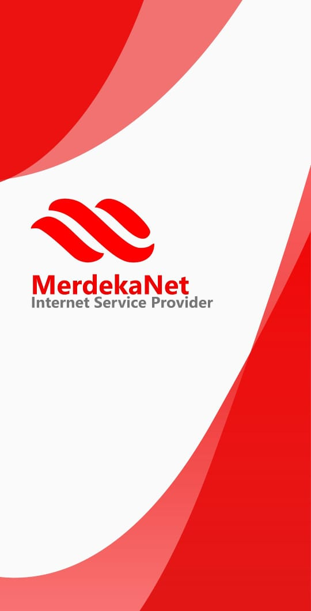
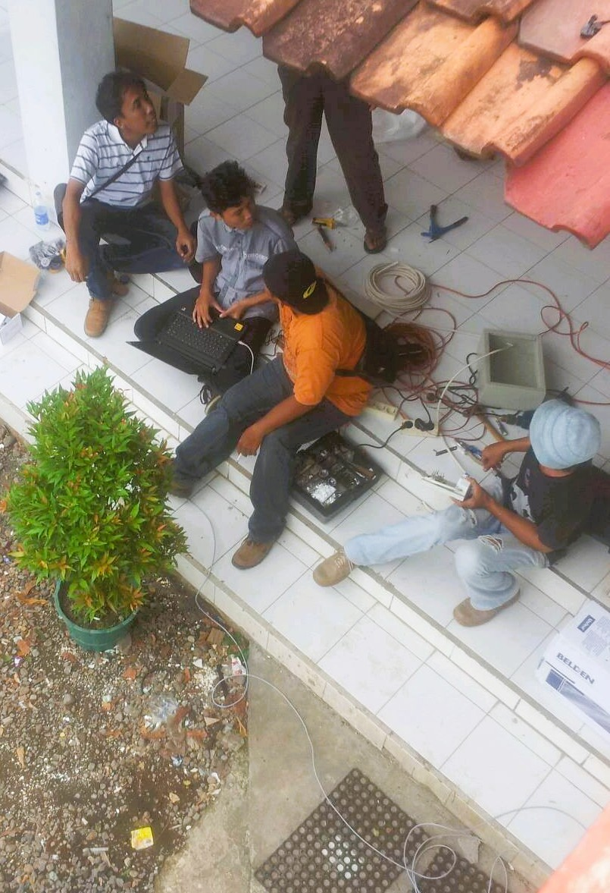

IT Technical Specialist
PT. Visionet Data Internasional — Assignment at PT. Adira Dinamika Multi Finance Tbk
Worked as IT Technical Specialist for 2 years. Achieved 98% SLA performance, managed over 100+ tickets/month, reduced average downtime by 30%, and improved response time under SLA.

Android Ticketing Application
PT. Merdeka Media Teknologi - Pemalang (2023)
Developed an Android-based app for customer service ticketing & tracking. Integrated QR code check-in, real-time status updates, using Java & MySQL, with over 1,000 users adoption.

Internet Infrastructure Project
PT. Merdeka Media Teknologi - Pemalang (2017)
Designed & built internet networks across all villages in the area. Led end-to-end installation, ensured 99% availability, deployed secure routing & firewall, finished within 6 months.